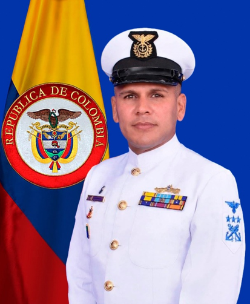

Armada Nacional de Colombia
Septiembre 2021 — Agosto 2022

Ricardo Acosta Hidalgo
JTC · Fuerza Naval del Sur
Trayectoria
Se incorporó el 29 de noviembre de 1996 a la Escuela Naval de Suboficiales ARC “Barranquilla”, ingresa al escalafón militar como Suboficial de la Armada Nacional de Colombia el 29 de noviembre de 1996, y ascendió al grado de Suboficial Jefe Técnico de Comando, máximo grado de la suboficialidad, el 23 de marzo de 2022. Graduado en la Escuela Naval de Suboficiales ARC “Barranquilla” como Tecnólogo Naval en Electrónica con énfasis en Radar (2011). Tecnólogo en Desarrollo de Sistemas de Información (2017) e Ingeniero de Sistemas (2017) de la Fundación Universitaria Tecnológico Comfenalco - Cartagena. Buzo Segunda Clase (2005). Tras 29 años, 8 meses y 14 días de servicio activo pasó a retiro el 24 de junio de 2025, por solicitud propia, logrando así cumplir 30 años de servicio en la gloriosa Armada Nacional.
Cursos militares
Capacitación Básica Armas Navales Radar (1996), Complementación Naval (1997), Curso de Submarinos Oceánicos No. 23 (2001-2002), Capacitación Intermedia (2002), Buceo y Salvamento (2004-2005), Capacitación Avanzada con énfasis en Procesos Administrativos (2011), Mantenimiento (2013), Derechos Humanos y Derecho Internacional Humanitario (2017), Lenguaje Claro para Servidores Públicos Colombianos (2018), Integridad, Transparencia y Lucha contra la Corrupción (2020), Programa Integral para Suboficiales de Alta Jerarquía de las Fuerzas Militares - PISAJ No. 15 (2021) y Curso de Secretarios Militares Navales y Aéreos 2022-I (2022).
Unidades
Escuela Naval de Suboficiales ARC “Barranquilla”, Escuela de Superficie, ARC “Espartana”, Escuela de Submarinos, ARC “Pijao”, Flotilla de Submarinos del Caribe, Cuartel General Fuerza Naval del Sur, Subdirección Académica Academia Naval de Estudios Estratégicos y División Programas Especiales JCYON.
Cargos
Alumno de la Escuela Naval de Suboficiales ARC “Barranquilla”, Jefe División CIC de la Escuela de Superficie, Electrónico del ARC “Espartana”, Alumno de la Escuela de Submarinos, Electrónico del ARC “Pijao”, Alumno de la Escuela de Buceo, Suboficial de Planta del ARC “Pijao”, Electrónico del ARC “Pijao”, Jefe División Electrónica del ARC “Pijao”, Jefe División Electrónica de la Escuela Naval de Suboficiales ARC “Barranquilla”, Jefe División Electrónica del Departamento de Operaciones ARC “Pijao”, Asesor de Operaciones del ARC “Pijao”, Asesor de Operaciones de la Flotilla de Submarinos del Caribe, Suboficial de Planeación del Cuartel General Fuerza Naval del Sur, Asesor de Comando del Cuartel General Fuerza Naval del Sur, Secretario Académico de la Subdirección Académica Academia Naval de Estudios Estratégicos y Gestor Técnico de la División Programas Especiales JCYON. Adicionalmente, Vigía División Electrónica del ARC “Pijao”.
Comisiones en el exterior
Operación Tridente 2005 en Estados Unidos, Operación Smart Search en Estados Unidos (2006), Entrenamiento para el Mantenimiento y Reparación del Sistema ISUS 90-111 en Alemania (2011), Pruebas FAT Factory Acceptance Test en Reino Unido (2013), Capacitación Operación y Mantenimiento de las Correderas de los Submarinos ARC “Pijao” y ARC “Tayrona” en Reino Unido (2013), Módulo Entrenamiento para Formación Avanzada Módulo J Sistema ISUS en Alemania (2013), Operación Diesel Electric Submarine Initiative - DESI 2017 en Estados Unidos, DESI 2018 en Mayport, Estados Unidos, Visita Geoestratégica del PISAJ No. 15 en Estados Unidos (2021) y Secretario Naval en México (2022-2023).
Condecoraciones, distintivos y logros
- Medalla Servicios Distinguidos a la Fuerza Submarina
- Medalla Servicios Distinguidos a la Armada Nacional
- Orden al Mérito Naval “Almirante Padilla” — Caballero
- Orden al Mérito Militar “Antonio Nariño” — Caballero
- Medalla por Tiempo de Servicio 15, 20 y 25 años
- Medalla Servicios Distinguidos a la Ingeniería Naval
- Medalla Militar “Fe en la Causa”
- Medalla Militar “Francisco José de Caldas” a la Consagración
- Medalla al Espíritu del Bicentenario Naval
- Distintivo Submarinista · Buzo de Salvamento
- Citación Presidencial de la Victoria Militar y Policial
- Distintivo de Tiempo de Embarque (10 y 20 años)
- Distintivo Asesor de Comando para Jefes Técnicos
- Distintivo PISAJ · Mejor Suboficial en reiteradas ocasiones
- Team de ataque — disparo de torpedo de guerra (Plan Orión)
- Navegación a bordo de submarino nuclear de Estados Unidos
- Secretario Naval en México (2022-2023)